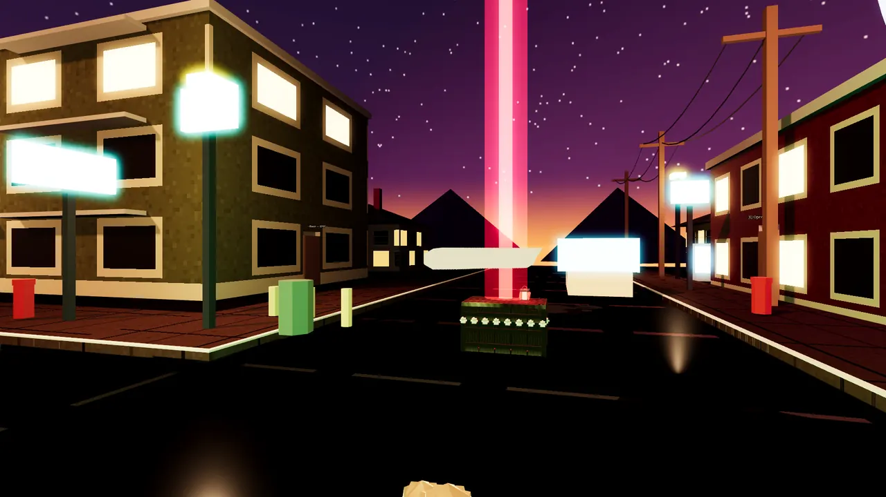
In-game
Survival in Town
The lit Town map in a Survival run, with the round, points and weapon HUD.
Skull World · Game dev · 2026
Skull World is an upcoming game for Steam, inspired by my admiration for catsoup's Blender work (catsoup is a member of TeamSESH). It is a Windows desktop game I am building in Godot 4. A launcher hub opens two environments, Town and Woods. Explore lets you walk each map. Survival is a round-based mode against skeletons. Maps are modeled in Blender and loaded at runtime. Environments Survival Dev log Blog post

In-game
The lit Town map in a Survival run, with the round, points and weapon HUD.
Environments
The galleries below mix in-game captures with Blender renders of the newest map versions. Each image is labeled.
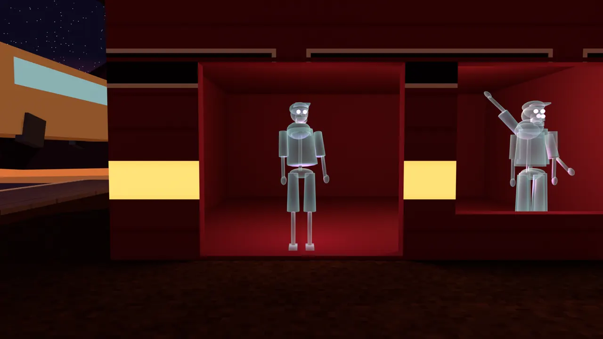
Town · Blender render
Lit shop windows with skeleton figures inside, from the current Town build.
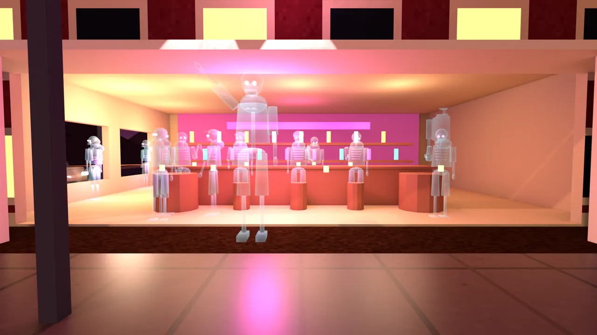
Town · Blender render
The bar, one of the buildings you can walk into.
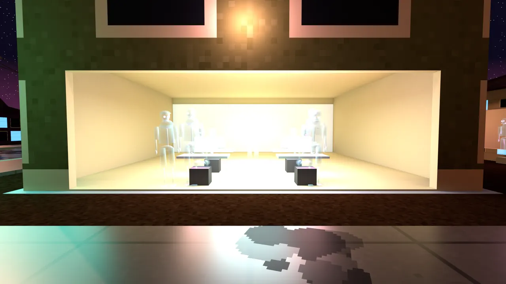
Town · Blender render
The office interior, lit warm.
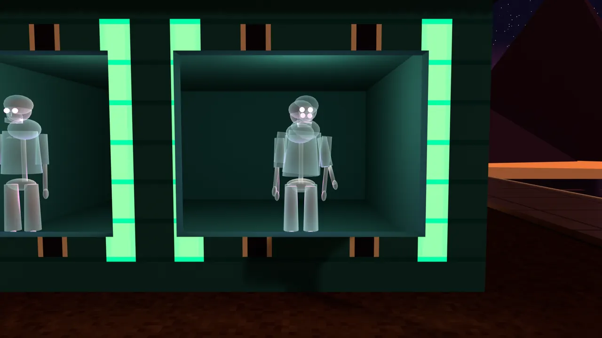
Town · Blender render
A house interior on the Town block, lit in green.
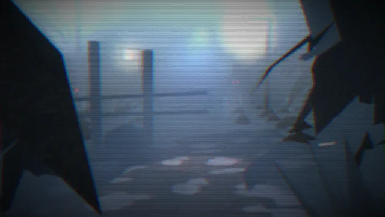
Woods · Blender render
Cold fog over the pines, inspired by Silent Hill 2.
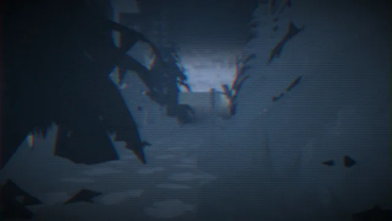
Woods · Blender render
The trail into the trees.
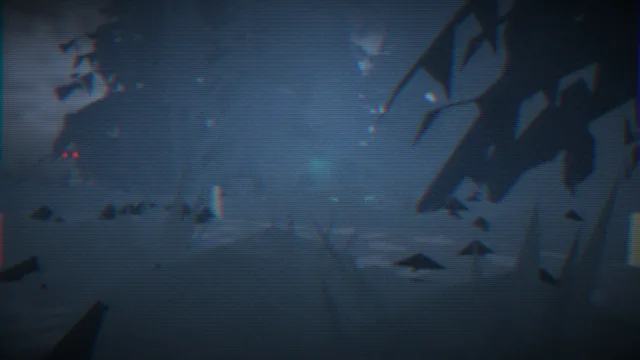
Woods · Blender render
Further in, where the fog closes up.
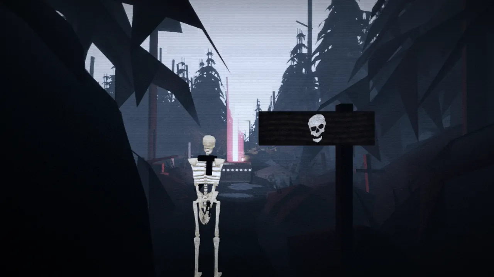
Woods · In-game
The Woods in-game, with the third-person camera on the skeleton player.
Survival
Playable on both maps. All shots are from the current build, in-game.
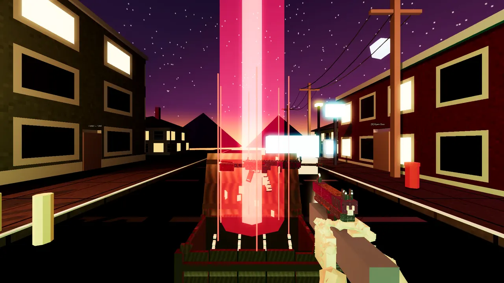
Feature
Spend points for a random weapon. The Vault spins, then relocates with a beacon so you can find it again.
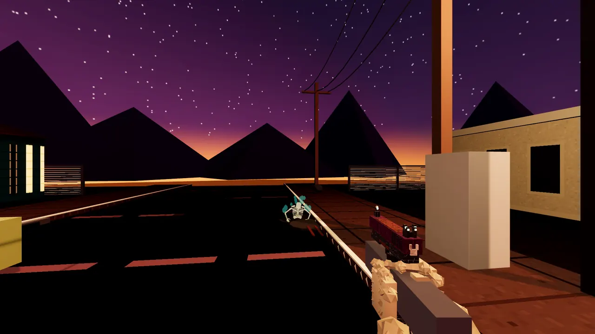
Feature
Skeletons climb out of manholes, sewer grates and ground cracks in Town, and coffins, dirt mounds and storm drains in the Woods.
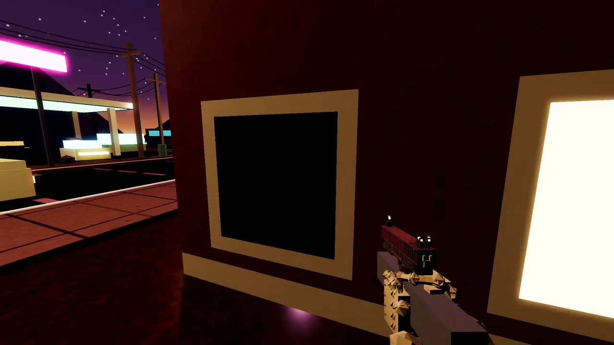
Feature
Perks are sold by skeleton NPCs, with an icon row in the HUD.
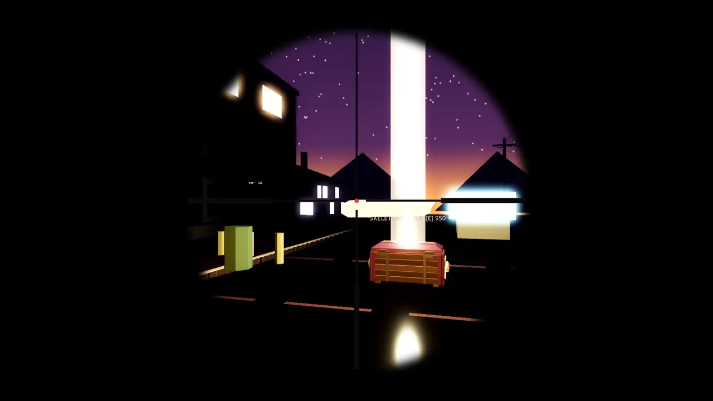
Feature
Guns aim down sights, with a full scope view on the bolt-action rifle.
In progress
A witch in the plaza gives clues. A ghost at the bar gives you a potion, the witch has you build her ritual items, and her ritual summons a purple skeleton with his car, which flies you out of Town into a new Woods map.
Stronger perks, including Second Wind and Bone Cache moving here, a Pack-a-Punch machine called the Soup Forge, and a mystery box at the entrance that never moves.
Town drops to three perks: Tough Brew, Quick Brew and Rapid Brew, which will only raise fire rate. Starting movement gets much slower and more realistic, ready for playtesting.
Got Town running as a playable map. I started with a browser build, then switched to a native Godot 4 desktop player that loads the Blender export at runtime with collision, fog and glow. Added a launcher hub that lists each environment and its versions.
Added a dark, foggy Woods inspired by Silent Hill 2, with a post shader for grain, vignette and scanlines and a flashlight on F. Grass, foliage and fog no longer block the player.
Built Survival on both maps: rounds, points, a mystery box, guns, perks, drops and game over. Reworked how skeletons chase you so they stop getting stuck, and added procedural sound effects and pause.
Gave each weapon its own reload animation, added melee weapons, aim down sights and a scope on the bolt-action rifle, and a third-person camera.
Added perk stands run by skeleton NPCs, double jump and a drop timer. Made the houses enterable with doors that open and close. Skeletons now climb out of manholes, grates, coffins and the ground.
Lit Town better and added lanterns, a signpost and mist to the Woods. Grounded the Woods Skeleton Vault, added power-up drops and finished the Vault's spin.
Wrote up the Town Easter egg, the post-Easter-egg Woods perks and the Soup Forge, a three-perk Town and slower starting movement. None of it is built yet.
Tech stack